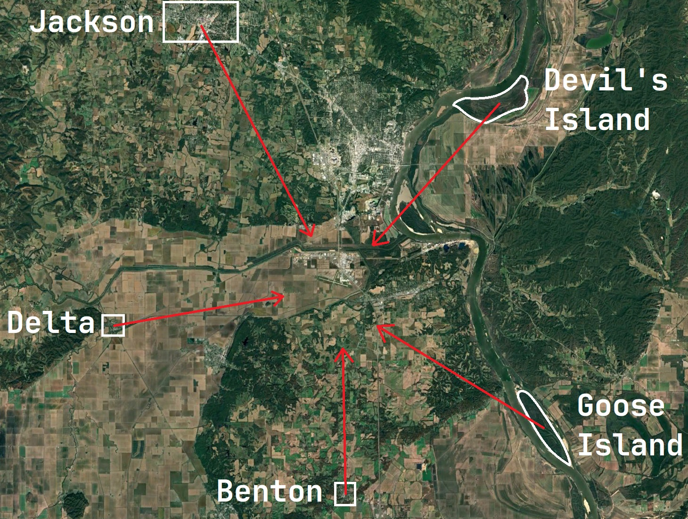
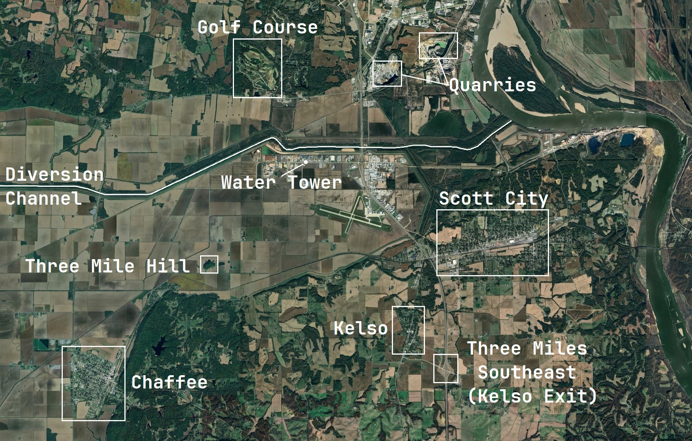
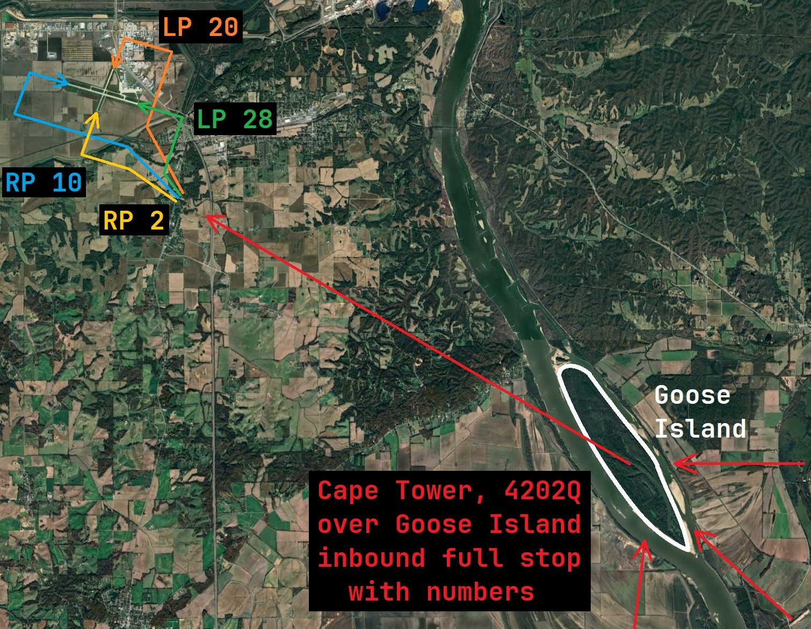

Arrival Gates: An Overview

General Procedure:
- Obtain latest local weather observation to prepare for arrival
- Overfly one of the five arrival gates (approx. 2,500' MSL)
- Report position: "Cape Tower, [callsign] over [gate] with numbers, [intentions]
- Proceed as instructed by our friendly controllers
Airport Area Detail

Local Landmarks:
The area surrounding our base of operations has a few handy visual references you can use when working in the traffic pattern. This local knowledge should work to enhance your situational awareness.
- Three mile hill: Useful for arrivals from the southwest, Tower may also refer to this specific spot on frequency for traffic advisories.
- Kelso Exit: Along I-55, an exit is located conveniently 3 nautical miles southeast of the field. This is a common reporting instruction from Tower.
- Chaffee: Occasionally used as a holding point for traffic outside the airspace when it gets busy, this town may be called out on frequency.
- Scott City: This town may be used by tower during traffic advisories.
Example Arrival
Goose Island Arrival Gate

General Procedure:
- Overfly the Goose Island Arrival Gate (approx. 2,500' MSL)
- Example initial call: "Cape Tower, Skyhawk 381J is over Goose Island with numbers, inbound for touch and goes."
- A collection of likely pattern entries are depicted in various colors above, but remember to listen for your instructions - ensure you understand the expectations!